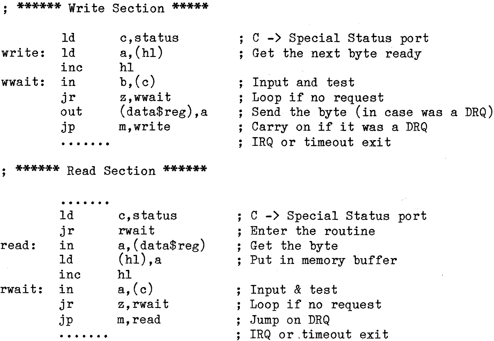

80-Bus News |
July–October 1982 · Volume 1 · Issue 3 |
| Page 42 of 51 |
|---|
The relevant parts of the 1797 data sheet are the boxes READ ENABLE TIMING on page 19, and WRITE ENABLE TIMING on page 20. Each contains a footnote in minute print in the bottom left-hand corner – there is a “worst case service time”. The data may be coming at the nominal rate of one byte every 16us, but when reading, the byte must be read within 13.5us (54 T states) of the DRQ signal appearing, and when writing, the next byte must be supplied within 11.5us (46 T states) of the DRQ request – which is even worse! The code developed above does not meet these figures, so how can it be compressed further?
Fortunately there is a way out of this dilema. It utilises one of the facets of the unique Z80 instructions, and is catered for in the hardware of GM809 . You may have wondered why the additional Status port is provided (at E4h) through which the DRQ and IRQ bits can be checked, when the same bits can be accessed through the internal status register of the 1797. Looking further at the circuit diagram will reveal that, as well as DRQ and IRQ being connected to the external input port, there is a connection to the “Motor on” monostable, (which should present a ‘0’ during normal disk I/O), and that the remaining lines are connected to 0V. Turning to the I/O instructions in the Z80 data sheets it can be seen that while the 8080 compatible IN A,(n) does not affect any of the bits in the flag register, the extra Z80 instructions – IN r,(C) where the port address is held in register C – does set the flags as a result of this operation. So if one of these instructions is used, the “Input and Test” operation can be completed in one go, and a very tight polling loop will result. However note that this can only be done if the “Wait” condition sets the flags suitably – this is why it is necessary to use a special port for the DRQ and IRQ inputs, as the internal Status register of the 1797 contains a variety of other bits which would prevent this happening. Adding the “Motor on” signal to the same port ensures that, if for some reason neither IRQ or DRQ occur, then the loop will be broken when the “Motor on” monostable finally times out.
The revised code for Read and Write now looks like this:
Note that in the WRITE section a byte is pre-fetched and output immediately in response to the Status byte being non-zero. This ensures that the worst case service time of 11.5us is met, and the final (and extra) byte output this way (on the IRQ) will be ignored by the 1797 and so does not matter. However if it is intended to use the value of HL on return from the Write routine for any reason this point should be remembered.
| Page 42 of 51 |
|---|